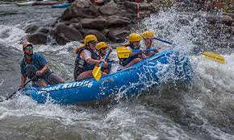
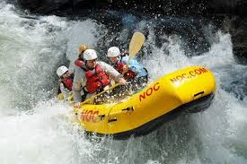
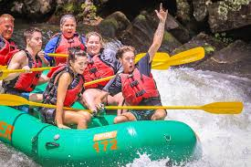

Have Booking Questions?
Ocoee River Rafting
Description
White water rafting on the Upper Ocoee River is more challenging than the Middle Ocoee section due to the big, powerful water of the 1996 Olympic course. While the beginning and ending sections of the trip are quiet enough that you can enjoy the natural beauty of the area, the river narrows through a steep set of rapids at the 1996 Olympic Kayak Slalom Course. Here you’ll drop through enormous rapids like Smileys, Slam Dunk, and the double-drop of Humongous. You’ll have a highly-trained guide in each raft, but boaters who take on the Upper Ocoee should be prepared to participate actively in their Ocoee white water rafting experience. A great trip for the adventurous paddler!
Chattooga River Rafting
Description
The Section III fully guided trip offers a great day of family fun with rolling Class I, II and III rapids that increase in difficulty as the day progresses. You’ll practice your rafting skills over a variety of rapids with the option to test yourself on Bull Sluice, the famous Class IV rapid, the largest rapid on Section III. Dropping 14 feet over a series of two drops, this challenging rapid provides a resounding introduction to the 2 miles of technical rapids downstream.
Nantahala River Rafting
Description
Generations of families and groups have been introduced to the exhilarating fun of white water rafting on the Nantahala’s eight miles of bouncy class I and II rapids. Our guides will steer you through the three-hour trip on one of the most popular rivers in America, ending with an exciting passage through Nantahala Falls at the trip’s end. Perfect for first-timers and a beautiful river for even the experienced paddler.
| Trips | Info | |||
|---|---|---|---|---|
| Minimum Age: | Intensity Level: | Trip Length: | Season: | |
| Ocoee River: Upper Ocoee | 12 years | Exciting and challenging. No previous white water experience required be prepared for the the 1/2 mile of continuouse class 4 rapids in the Olympic Section | Approximately 3 hours (1.5 hours on the river) | Weekends Mid May to Mid September |
| Chattooga River: Section 3 | 8 years | Moderate. No previous white water experience needed. Fully guided trip | Approximately 7 hours | Early March through Early November |
| Nantahala River: Fully Guided Tour | 7 years old or 60 lbs | Mild to moderate. No experience needed for Guided Trips. All rafts on the guided trips have a guide | Approximately 3.5 hours (2 hours on the river) | Anytime |